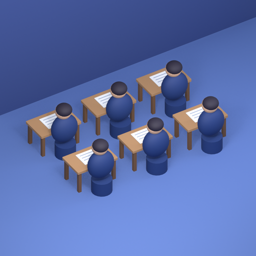
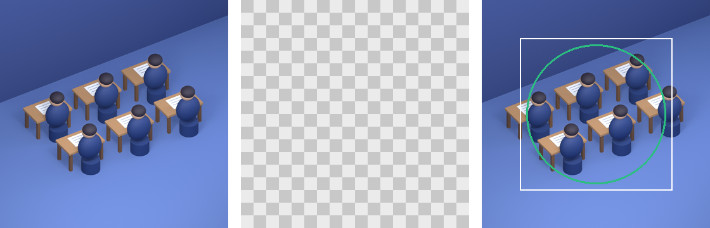
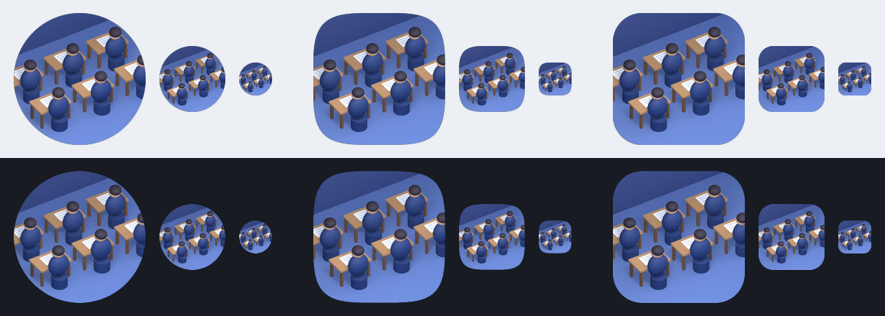
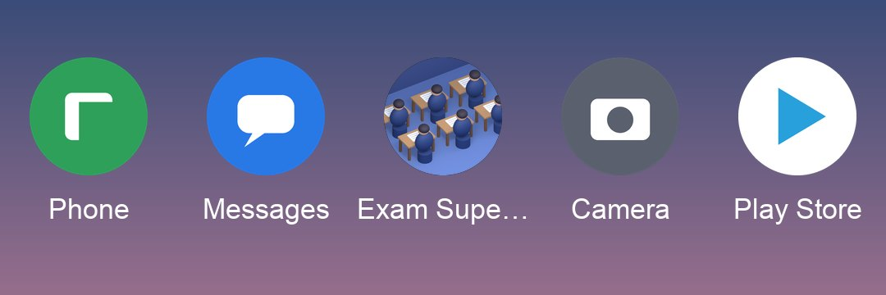
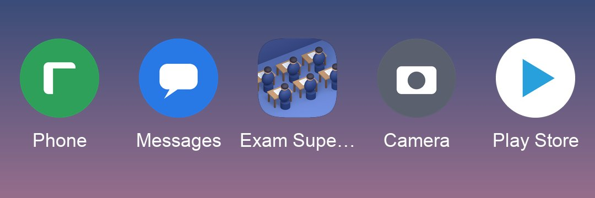
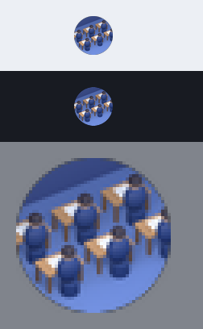

The exam room on the app-icon branch
Six students from behind, at wooden desks with white papers, on a blue floor. Each of the three layers (floor, desks and papers, students) has its own lightness, so the room survives being shrunk. The floor is lifted off navy so the icon keeps its edge on a dark wallpaper.
At 48 px: it reads as rows of people at desks, and its edge holds on both wallpapers. Single desks and papers are not distinct at that size; the regular pattern carries it.





At a true 48 px on light and dark, then the same 48 px pixels enlarged four times without smoothing.